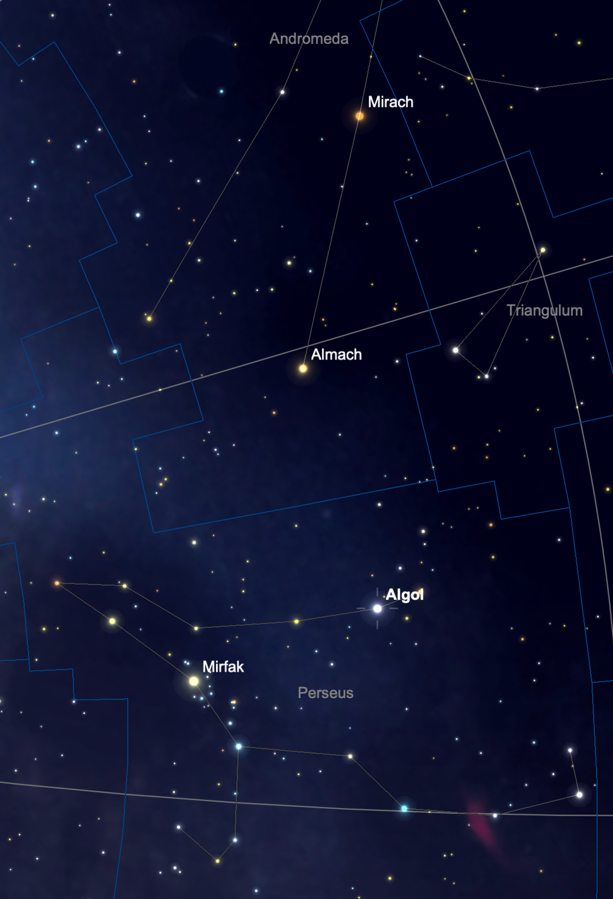

I've notched a much delayed observing first tonight: I've seen Algol at minimum brightness.
For those unfamiliar with it, Algol (sometimes called the "Demon Star") is an eclipsing binary in which a pair of stars orbit around one another. Their orbit is aligned such that the stars pass in front of one another when viewed from Earth. When the fainter star passes in front of the brighter star, Algol appears to dim in our sky. The dimming lasts a few hours and happens every 2.86739 days. The dimming is visible to the naked eye and was likely known in antiquity. The larger star is around 3 times the mass of our sun (see the AAVSO page on Algol).
It's embarrassing that I've been an avid sky watcher for this long and have never bothered to monitor Algol during an eclipse. It was primarily a matter of planning as the dimming of Algol is only dramatic for a few hours every few days, so one has to be on the lookout for it and to have Algol up in the sky at the time.
A few months ago I wrote a simple script to put the minima of Algol on my calendar. I've had a script I've used for a few years which puts dark moon evenings on my calendar so I don't miss even brief observing opportunities. I simply added a step which looks for a minima of Algol happening in the evening (within 6 hours after sunset) and which happens while Algol is at least 30 degrees above the horizon. Tonight fit the bill perfectly. The minima was at 9:27 PM local time and twilight ended around 7:00 PM. This meant that I could go out as soon as it was fully dark and see the star near full brightness, then go out a few hours later and see the constellation changed.

SkySafari map showing Algol, Almach, and Mirach.
On the first trip outside shortly after 7, Algol was bright. Similar in brightness to Almach and Mirach above it (both are magnitude 2.1, the same as Algol is normally) and significantly brighter than Rho Persei (mag 3.4) immediately to its right.
At about 9:30 PM, another look showed that Algol was much dimmer than Almach and Mirach and was similar in brightness to Rho Persei. This does dramatically alter the constellation of Perseus. Algol is the second brightest star in the constellation, so dimming it to roughly one third of it's normal brightness removes one of the cornerstones of the shape I'm used to seeing.
For the movie trivia folks out there, the name Algol (derived from from Arabic ra's al-ghul, see Wikipedia) will be familiar to fans of Christopher Nolan's Dark Knight trilogy.